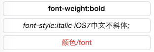

- Introduction
- 1. EMP5.4技术白皮书
- 2. EMP 安全
- 3. Release Note
- 4. EMP产品已知问题列表
-
5.
EMP界面开发规范
- 5.1. 变更记录
- 5.2. FAQ
- 5.3. CSS样式
- 5.4. 属性
-
5.5.
界面标签
- 5.5.1. 控件支持属性和样式对照表
-
5.5.2.
基础标签
- 5.5.2.1. A
- 5.5.2.2. B & Strong
- 5.5.2.3. Body
- 5.5.2.4. Br
- 5.5.2.5. Div
- 5.5.2.6. Form
- 5.5.2.7. I & Em
- 5.5.2.8. Img
- 5.5.2.9. InputButton
- 5.5.2.10. InputCheckbox
- 5.5.2.11. InputHidden
- 5.5.2.12. InputPassword
- 5.5.2.13. InputRadio
- 5.5.2.14. InputSegment
- 5.5.2.15. InputSwitch
- 5.5.2.16. InputText
- 5.5.2.17. Label
- 5.5.2.18. Richtext
- 5.5.2.19. Select & Option
- 5.5.2.20. Table & Tr & Td & Th
- 5.5.2.21. Webview
- 5.5.3. SDK定制说明
- 5.5.4. 定制标签
- 5.6. 布局与刷新
-
5.7.
Lua
-
5.7.1.
基础Lua库
- 5.7.1.1. accelerometer
- 5.7.1.2. audio
- 5.7.1.3. corp
- 5.7.1.4. database
- 5.7.1.5. document
- 5.7.1.6. file
- 5.7.1.7. gesture
- 5.7.1.8. gps
- 5.7.1.9. history
- 5.7.1.10. http
- 5.7.1.11. json
- 5.7.1.12. kv
- 5.7.1.13. location
- 5.7.1.14. offline
- 5.7.1.15. qrcode
- 5.7.1.16. screen
- 5.7.1.17. system
- 5.7.1.18. timer
- 5.7.1.19. tls
- 5.7.1.20. utility
- 5.7.1.21. video
- 5.7.1.22. window
- 5.7.2. 界面标签支持的Lua接口
- 5.7.3. 动画
- 5.7.4. RYTL脚本库
-
5.7.1.
基础Lua库
- 5.8. javascript
- 5.9. 事件
- 6. EMP开发配置
- 7. Migrate
- 8. EWP5.4管理后台功能说明文档
- 9. EWP API
-
10. EWP DEMO
- 10.1. redis缓存示例
- 10.2. redis数据存储示例
- 11. EWP Manual
- Published using GitBook
Button
1 功能说明
按钮包括普通按钮和提交按钮两种。
1.1 button
button为普通的按钮。
例：<input type='button' value='按钮'></input>
注：button默认居中，没有默认大小，在不写样式的情况下，根据内容计算实际大小。
1.2 submit
submit按钮负责form表单的提交，因此它需要包含在form中。
例：<input type='submit' value='提交'></input>
关于form表单的提交参阅form标签介绍。
2 属性
全局属性以及具体说明参见属性介绍
2.1 border
按钮是否有边框。同时支持设置border样式，width、style、color。
@value string 1/0
@default 0
2.2 delay
指定按钮点击的延时时间
2.3 enable
指定按钮是否可以点击。各个平台的不能点击效果可能会略有不同。
2.4 leftimg
指定控件左侧小图标
2.5 leftimgpos
指定控件左侧小图标的显示位置
2.6 rightimg
指定控件右侧小图标
2.7 rightimgpos
指定控件右侧小图标的显示位置
2.8 type
指定按钮的类型
@value string button/submit
2.9 value
指定按钮的值，同时也是按钮的title。
3 样式
3.1 background-color
指定按钮背景色。如果按钮有边框则背景色不应该超出边框的显示区域。
3.2 background-image
指定按钮背景图。如果按钮有边框则背景图不应超出边框的显示区域。
3.3 border-radius
设置控件四个边的圆角属性。
格式：border-radius: 25px 10px 0px 10px
四个圆角属性值的顺序为：top_left、top-right、bottom-right、bottom-left。
如果要四个边的圆角值相同，可以用一个值表示。
如果要让四个角圆角弧度不一样，需要按顺序写出四个值。
3.4 color
按钮上文本颜色，即按钮上显示的文字颜色，支持色值格式#RGB(#FF00FF)。
3.5 display
指定控件的可视状态。
@value none/block
@default block
3.6 filter
设置渐变背景色
3.7 font-size
设置字体大小
3.8 font-style
指定文本的字体样式
@value normal(默认)/italic(斜体)
3.9 font-weight
设置字体类型
3.10 height
指定控件高度
@default 根据文字内容计算
3.11 position
指定控件的显示状态。
@value fixed/static/toplevel
@default static
3.12 visibility
规定元素是否可见。即使不可见的元素也会占据页面上的空间。
@value visible/hidden
@default visible
注：当与display属性同时出现，visibility覆盖display属性，display不起作用。
3.13 width
指定控件宽度
@default 根据文字内容计算，但宽度不可超出父控件显示范围
4 伪类
支持：active、inactive样式。
当button设置了伪类样式active后，点击button的一瞬间该button应用伪类样式。
当button设置了伪类样式inactive后，只有属性enable="false"时该button才能应用此样式。
伪类样式支持如下：
4.1 background-color
指定按钮背景色。如果按钮有边框则背景色不应该超出边框的显示区域。
4.2 background-image
指定按钮背景图。如果按钮有边框则背景图不应超出边框的显示区域。
4.3 color
按钮上文本颜色，即按钮上显示的文字颜色，支持色值格式#RGB(#FF00FF)。
4.4 font-size
设置字体大小
5 布局规则
leftimg和rightimg图片的显示及大小的计算规则如下：
注：网络图片中的w、h参数，只决定服务器返回的图片大小，实际布局效果由以下规则确定。
- 样式指定高度，button高度按样式来；未指定高度，button高度根据文字计算获取（即单行文字高度）；
- 样式指定宽度，button宽度按样式来，此时文本域宽度为button宽减去图片所占宽；未指定宽度，由图片布局和文本长度共同计算得到，但不得超过父控件显示范围。
- button存在leftimgpos或rightimgpos属性时，leftimg或rightimg图片大小及所占位置由对应属性确定。若button无样式宽，则`button宽 = leftimgpos.left + leftimgpos.width + leftimgpos.right + 文本域宽度 + rightimgpos.left + rightimgpos.width + rightimgpos.right；
- button无leftimgpos或rightimgpos属性时，leftimg或rightimg图片高度拉伸填满button高度，图片宽度按高度同比缩放，既保证图片宽高比不变。若button无样式宽，则`button宽 = leftimg.width + 文本域宽度 + rightimg.width。如果为网络图片需要异步下载，图片下载成功后需要刷新button，以保证上述规则成立，如此情况导致button覆盖后续控件，客户端不需要额外处理；
- 文本域宽度不足以显示全部文字时，文字加省略号显示，各平台省略号位置由系统决定，不需要统一；
- 由父控件控件不足、给定图片宽高比不合理、leftimgpos或rightimgpos赋值不合理等导致的显示效果不美观问题，不需要额外处理。
5.1 效果图
图中绿色区域为button，红色区域为button中文字区域。
文字内容应该在添加图标后的剩余区域中局中显示。
6 事件
6.1 onclick
按钮的点击事件。对于submit按钮，如果指定了onclick事件，则不执行submit功能。
7 Examples
7.1 position
代码片段1：css
<style>
.father{width:300px;height:30px;left:10px;font-size:15px;}
.positionFixed{position:fixed;}
.positionToplevel{position:toplevel;top:200px;left:10px;background-color:#FFFF00;}
</style>
代码片段2：页面
<body>
<!-- positon:fixed -->
<input type='button' value='positon:fixed body第一个控件' class='father,positionFixed'border='1'></input>
<!-- positon:toplevel -->
<input type='button' value='positon:toplevel 不随页面滚动' class='father,positionToplevel'border='1'></input>
<!-- positon:fixed -->
<input type='button' value='positon:fixed body最后一个控件' class='father,positionFixed'border='1'></input>
<body>
效果图：
7.2 display/hide/visibility
代码片段1：css
<style>
.father{width:300px;height:30px;left:10px;font-size:15px;}
.display1{display:none;}
.display2{display:block;}
.visibility1{visibility:visible;}
.visibility2{visibility:hidden;}
</style>
代码片段2：页面
<body>
<!-- hide -->
<input type='button' hide='false' value='hide=false，下方有hide=true的button' class='father' border='1'></input>
<input type='button' hide='true' value='hide=true的button,不应该显示出来' class='father' border='1'></input>
<!-- diaplay -->
<input type='button' value='display=block，下方有display=none的button' class='father,display2' border='1'></input>
<input type='button' value='display=none，不应该显示出来' class='father,display1' border='1'></input>
<!-- visibility -->
<input type='button' value='visibility:visible 下方有visibility=hidden的button;' class='father,visibility1' border='1'></input>
<input type='button' value='visibility:hidden 不应该显示;' class='father,visibility2' border='1'></input>
<body>
效果图：
7.3 delay
代码片段1：css
<style>
.father{width:300px;height:30px;left:10px;font-size:15px;}
</style>
代码片段2：页面
<body>
<!-- 设置了点击间隔为10秒的按钮 -->
<input type='button' class='father' border='1' delay='10' value='一个delay=10的button' onclick='click()'></input>
<body>
效果图：
7.4 border/border-Radius
代码片段1：css
<style>
.father{width:300px;height:30px;left:10px;font-size:15px;}
.borderstyle{border:10px solid #ff00ff;}
.borderRadiusFour{border-radius: 35px 0px 20px 10px;background-image:url(animation.png);}
.borderRadiusOne{border-radius:10px;background-color:#FF0000;}
</style>
代码片段2：页面
<body>
<!-- border -->
<input type='button' value='border设置为1的button' border='1' class='father'></input>
<input type='button' value='border设置为0的button' border='0' class='father'></input>
<input type='button' value='border取默认值的button，默认无边框' class='father'></input>
<!-- border 样式-->
<input type='button' value='border设置为1的button' border='1' class='father,borderstyle'></input>
<body>
效果图：
7.5 background-color/background-image/filter
代码片段1：css
<style>
.father{width:300px;height:30px;left:10px;font-size:15px;}
.background_color {background-color:#FFFF00;}
.background_image {background-image:url(animation.png);}
.filter{filter:progid(startColorStr='#FFFF00',endColorStr='#ff0000',gradientType='1',alpha='0.5');}
</style>
代码片段2：页面
<body>
<!-- background-color -->
<input type='button' value='背景色,有边框' class='father,background_color' border='1'></input>
<input type='button' value='背景色,无边框' class='father,background_color' border='0'></input>
<!-- background-image -->
<input type='button' value='背景图，有边框' class='father,background_image' border='1'></input>
<input type='button' value='背景图，无边框' class='father,background_image' border='0'></input>
<!-- filter -->
<input type='button' value='渐变色,有边框' class='father,filter' border='1'></input>
<input type='button' value='渐变色,无边框' class='father,filter' border='0'></input>
<body>
效果图：
7.6 font-color/font-weight/font-style
代码片段1：css
<style>
.father{width:300px;height:30px;left:10px;font-size:15px;}
.textColor {color:#ff0000;}
.fontWeight{font-weight:bold;}
.fontStyle{font-style:italic;}
</style>
代码片段2：样式
<body>
<!-- font-weight -->
<input type='button' value='font-weight:bold' class='father,fontWeight' border='1'></input>
<!-- font-style -->
<input type='button' value='font-style:italic iOS7中文不斜体;' class='father,fontStyle' border='1'></input>
<!-- color -->
<input type='button' value='颜色/font' class='father,textColor' border='1'></input>
<body>
效果图：

7.7 rightimg/leftimg
代码片段1：css
<style>
.father{width:300px;height:30px;left:10px;font-size:15px;}
.button_1{width:300px;left:10px;font-size:15px;}
.tip_1{width:310px;height: 40px;left: 10px;color: #0000FF; font-size: 15px;}
</style>
代码片段2：样式
<body>
<!-- rightimg -->
<label class="tip_1">加载本地图片：</label>
<input type='button' class='father' border='1' rightimg='right_arrow.png' value='rightimg:加载本地图片'></input>
<label class="tip_1">加载网络图片：</label>
<input type='button'border='1' class='father' rightimg='http://h.hiphotos.baidu.com/zhidao/pic/item/6a63f6246b600c3320b14bb3184c510fd8f9a185.jpg' value='网络图片,没有w,h参数'></input>
<input type='button'border='1' class='father' rightimg='http://h.hiphotos.baidu.com/zhidao/pic/item/6a63f6246b600c3320b14bb3184c510fd8f9a185.jpg?w=30&h=20' value='网络图片,有w,h参数,且h小于Button高度'></input>
<input type='button'border='1' class='father' rightimg='http://h.hiphotos.baidu.com/zhidao/pic/item/6a63f6246b600c3320b14bb3184c510fd8f9a185.jpg?w=30&h=40' value='网络图片,有w,h参数,且h大于Button高度'></input>
<input type='button'border='1' class='button_1' rightimg='http://h.hiphotos.baidu.com/zhidao/pic/item/6a63f6246b600c3320b14bb3184c510fd8f9a185.jpg' value='网络图片,没有样式height,没有w,h参数'></input>
<!-- leftimg -->
<label class="tip_1">加载本地图片：</label>
<input type='button' class='father' border='1' leftimg='btn_back.png' value='leftimg:加载本地图片'></input>
<label class="tip_1">加载网络图片：</label>
<input type='button'border='1' class='father' leftimg='http://h.hiphotos.baidu.com/zhidao/pic/item/6a63f6246b600c3320b14bb3184c510fd8f9a185.jpg' value='网络图片,没有w,h参数'></input>
<input type='button'border='1' class='father' leftimg='http://h.hiphotos.baidu.com/zhidao/pic/item/6a63f6246b600c3320b14bb3184c510fd8f9a185.jpg?w=30&h=20' value='网络图片,有w,h参数,且h小于Button高度'></input>
<input type='button'border='1' class='father' leftimg='http://h.hiphotos.baidu.com/zhidao/pic/item/6a63f6246b600c3320b14bb3184c510fd8f9a185.jpg?w=30&h=40' value='网络图片,有w,h参数,且h大于Button高度'></input>
<input type='button'border='1' class='button_1' leftimg='http://h.hiphotos.baidu.com/zhidao/pic/item/6a63f6246b600c3320b14bb3184c510fd8f9a185.jpg' value='网络图片,没有样式height,没有w,h参数'></input>
</body>
效果图：
7.8 伪类
代码片段1：css
<style>
.father{width:300px;height:30px;left:10px;font-size:15px;}
.button1{width:300px;height:30px;left:10px;font-size:15px;}
.button1:active {color: #ff0000;font-size: 20px;background-color: #1cff00;}
.btn{width:300px;height:30px;left:10px;}
.btn:inactive{color:#ffffff;background-color:#DEF123;font-size:20px;}
</style>
代码片段2：样式
<body>
<label>设置了active样式的按钮</label>
<input type='button' value='这是一个按钮' class="btn"/>
<label>设置了inactive的enable=false的按钮</label>
<input type='button' value='这是一个按钮' enable="false" class="btn"/>
</body>
效果图：

| Date | Note | Modifier |
|---|---|---|
| 2015-04-08 | 增加属性delay、leftimg、rightimg，增加点击等样式支持 | lin.jitao |
| 2015-05-06 | 增加leftimg、rightimg的布局规则 | lin.jitao |
| 2015-08-17 | 增加新属性及新样式的示例代码及效果图 | chai.lixin |
| 2015-09-18 | 增加属性leftimgpos、rightimgpos，修改leftimg、rightimg的布局规则，并调整文档结构 | zhou.changjin |
| 2015-10-15 | 增加leftimg、rightimg为网络图片时的布局说明 | zhou.changjin |
| 2015-12-23 | 补充默认宽高说明 | zhou.changjin |